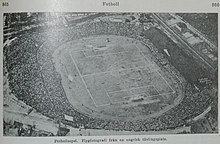
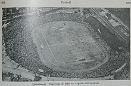

Stamford Bridge is a football stadium in Fulham, adjacent to the borough of Chelsea in West London. It is the home of Premier League club Chelsea. With a capacity of 40,341, it is the ninth largest venue of the 2022–23 Premier League season and the eleventh largest football stadium in England. Opened in 1877, the stadium was used by the London Athletic Club until 1905, when new owner Gus Mears founded Chelsea Football Club to occupy the ground; Chelsea have played their home games there ever since. It has undergone major changes over the years, most recently in the 1990s when it was renovated into a modern, all-seater stadium. Stamford Bridge has been a venue for England international matches, FA Cup Finals, FA Cup semi-finals and Charity Shield games. It has also hosted numerous other sports, such as cricket, rugby union, rugby league, speedway, greyhound racing, baseball and American football. The stadium's highest official attendance is 82,905, for a league match between Chelsea and Arsenal on 12 October 1935.
"Stamford Bridge" is considered to be a derivative of "Samfordesbrigge" meaning "the bridge at the sandy ford"Eighteenth century maps show a "Stanford Creek" running along the route of what is now a railway line at the back of the East Stand as a tributary of the Thames. The upper reaches of this tributary have been known as Billingswell Ditch, Pools Creek and Counters Creek. In medieval times the creek was known as Billingwell Dyche, derived from "Billing's spring or stream". It formed the boundary between the parishes of Kensington and Fulham. By the 18th century, the creek had become known as Counter's Creek, which is the name it has retained since
Stamford Bridge opened in 1877 as a home for the London Athletic Club and was used almost exclusively for that purpose until 1904, when the lease was acquired by brothers Gus and Joseph Mears, who wanted to stage high-profile professional football matches there. However, previous to this, in 1898, Stamford Bridge played host to the World Championship of shinty between Beauly Shinty Club and London Camanachd.[8] Stamford Bridge was built close to Lillie Bridge, an older sports ground which had hosted the 1873 FA Cup Final and the first ever amateur boxing matches (among other things). It was initially offered to Fulham Football Club, but they turned it down for financial reasons. After considering the sale of the land to the Great Western Railway Company, the Mears decided to found their own football club, Chelsea, to occupy the ground as a rival to Fulham. Noted football ground architect Archibald Leitch, who had also designed Ibrox, Celtic Park, Craven Cottage and Hampden Park, was hired to construct the stadium. In its early days, Stamford Bridge stadium was served by a small railway station, Chelsea and Fulham railway station, which was later closed after World War II bombing.